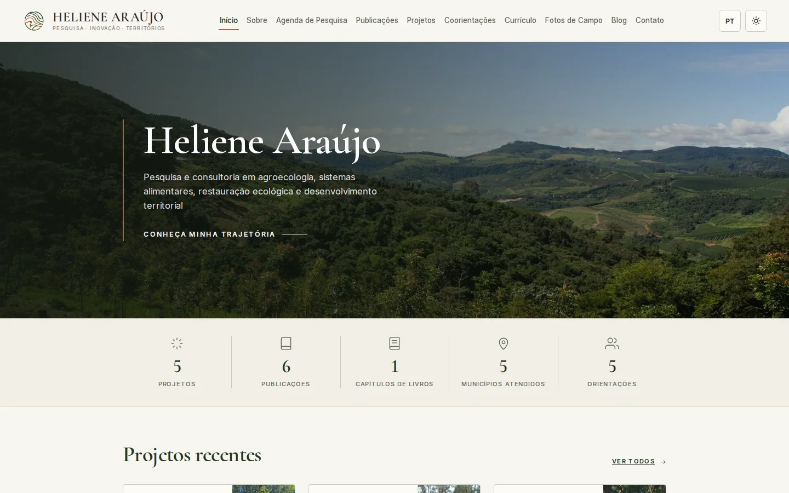
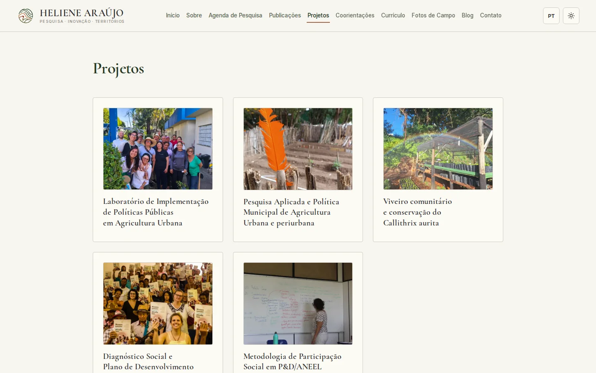
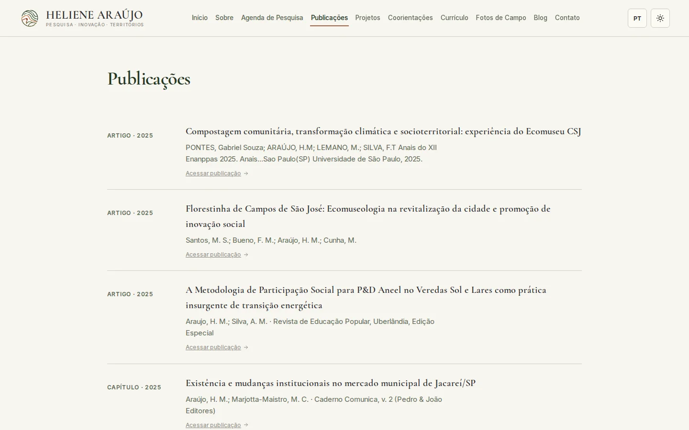

Case · Site institucional com CMS
Heliene Araújo: um site acadêmico bilíngue que ela atualiza sozinha
Site institucional e acadêmico bilíngue (PT/EN) para apresentar a atuação de Heliene Araújo como pesquisadora, consultora e estrategista em desenvolvimento territorial — com CMS próprio para que ela mantenha o conteúdo em dia sem depender de desenvolvedor.

Contexto
Heliene Araújo é pesquisadora e consultora em agroecologia, sistemas alimentares, restauração ecológica e desenvolvimento territorial. O público do site inclui pesquisadores, gestores públicos, parceiros institucionais e potenciais clientes de consultoria.
O trabalho acadêmico e de consultoria dela — publicações, projetos de pesquisa, atividades de campo, orientações — vivia espalhado, sem um lugar único que refletisse a atuação completa e pudesse ser atualizado por ela mesma.
O problema
- Sem presença digital própria que refletisse a atuação acadêmica atualizada.
- Publicações, projetos e agenda de pesquisa sem um lugar centralizado.
- Conteúdo bilíngue exigiria tradução manual constante, inviável no dia a dia.
- Qualquer atualização de conteúdo dependeria de um desenvolvedor, travando a autonomia dela.
A solução
Um site multi-página com CMS próprio (Payload), onde ela cadastra e edita todo o conteúdo sozinha. Doze módulos entregues, entre eles:
- CMS de conteúdo — Publicações, Projetos, Agenda de Pesquisa, Fotos de Campo, Blog e Orientações, todos editáveis por ela via painel Payload.
- Indicadores ao vivo — os números da Home (projetos, publicações, municípios atendidos, orientações) são contados automaticamente do conteúdo publicado, não digitados à mão.
- Tradução assistida por IA — ela cadastra em português; o sistema sugere a tradução em inglês (DeepL) só quando o campo em inglês está vazio, e nunca sobrescreve o que ela já editou.
- Fluxo editorial — Rascunho → Publicado: nada aparece no site público até ela decidir publicar.
- Currículo e fotos de campo — CV para download em PDF e álbuns de atividades de campo com lightbox.
O produto em uso


Resultados
Engenharia
Depoimento
Publicar apenas com nome, cargo, organização e autorização registrada.
Precisa de um site que você mesmo consegue manter?
Conte o cenário e voltamos em até um dia útil com os próximos passos.
Falar sobre meu projeto